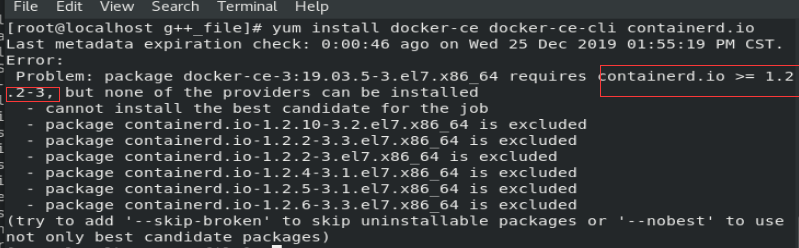
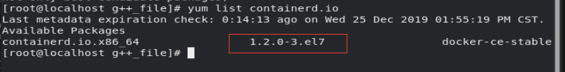
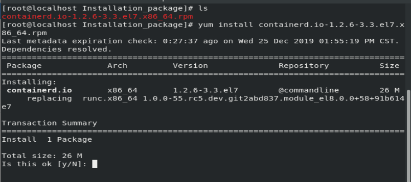
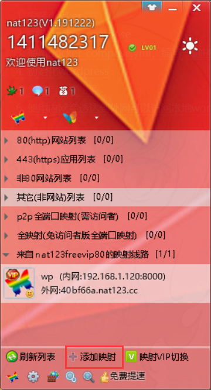
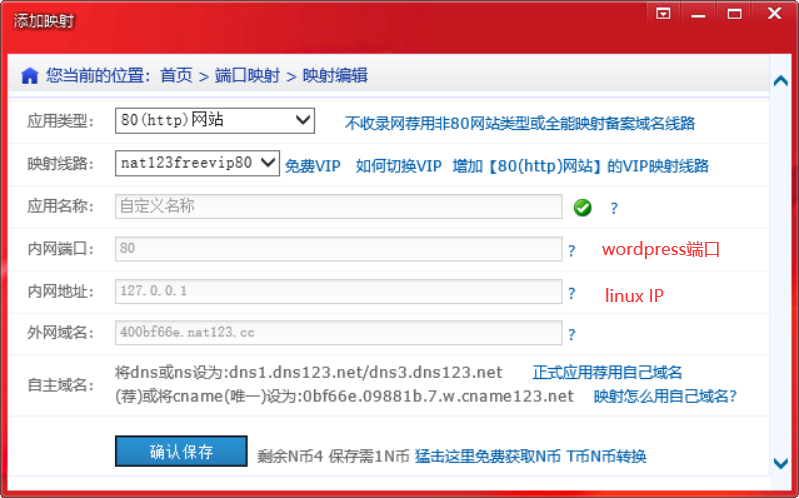

使用cent8进行操作
docker是一种容器技术，能将应用封装成一个镜像wordpress动态博客
安装docker
设置仓库
安装所需的软件包。yum-utils 提供了 yum-config-manager ，并且
device mapper 存储驱动程序需要 device-mapper-persistent-data 和 lvm2
1 | // 设置仓库 |
1 | // 设置稳定的仓库 |
1 | // 安装docker与其依赖 |
安装时候，出现下图的错误

版本较高的containerd.iocontainerd.io的版本必须>=1.2.2-3

yum源的containerd.io版本太低
找到下载好的安装包，直接用yum安装

最后，在安装docker
1
sudo yum install docker-ce docker-ce-cli
使用docker
1 | // 启动[停止][重启]docker |
更改镜像源为国内
1 | // 创建文件 |
- 阿里云，容器
注册好后，选择镜像仓库，并创建
然后选择镜像加速
安装docker-compose
这个是用于定义与运行多个docker应用程序的工具
1 | // 终端输入 pip 连按两下 Tab键 查看有没有pip(没有则自行百度python-pip) |
使用docker-compose.yml，编写一键搭建wordpress博客的配置文件
1 | // 查看所有已被占用的端口 |
1 | // 创建文件 docker-compose.yml，并写入以下内容 |
注意！
使用dockerfile是挂载不了目录的
使用docker-compose.yml文件
1 | // 启动应用程序 |
初始化wordpress
打开浏览器，输入
localhost:80008000为映射的端口
如果出现无法连接到数据库的错误
重启一下linux
使用systemctl启动docker
关闭防火墙
关闭selinux
1 | // 永久关闭selinux |
使用自定义主题
将下载好的主题，解压
1 | // 终端运行，将宿主机的文件，拷贝到容器里 |
进入后端，刷新主题即可显示
使用内网穿透达到外网可以访问本地wordpress
下载，注册，登陆后


修改媒体文件最大上传大小
更新软件
apt-get update -y安装vim
apt-get install vim -y
1 | // 进入容器，创建文件 |
增加文件上传类型
1 | // 进入容器，修改配置文件 |
手动创建容器（可选）
以下是我的容器创建的例子
1 | // 这是一个bash |
wordpress文章里插入nas里的视频
创建容器的时候，将nas的共享目录，映射到
/var/www/html目录里修改映射目录的权限
添加markdown插件
WP Githuber MD视频插入写法
1
2
3
4
5
6
7// width宽，height高，src视频源
// http://192.168.32.130:8000 表示 wordpress网站地址
// /data1/video/qyaxl/1.mp4 表示 视频目录 （nas映射目录下的文件）
[video width="1280" height="720" mp4=
"http://192.168.32.130:8000/data1/video/qyaxl/1.mp4"]
[/video]